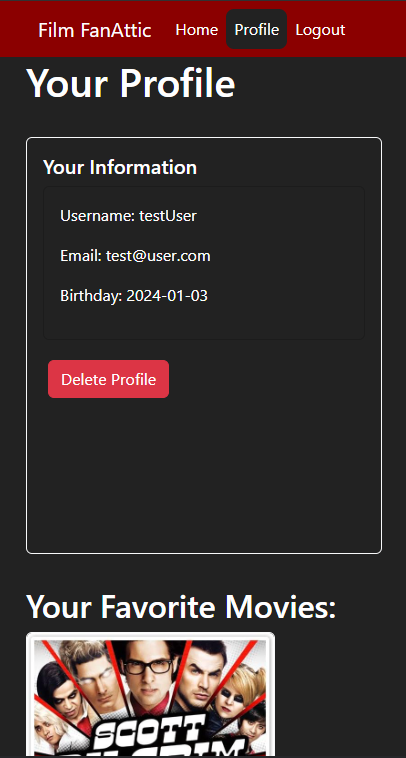

FilmFan is the first app I built using React! It provides users with access to information about movies. Users are able to sign up, update their personal information and create a list of their favorite movies.
FilmFan was a project assigned to me as part of a full-stack web development course at CareerFoundry. It was designed to improve my abilities working with node.js, React, JavaScript and Client/Server architecture.
The goal of the project was to build the Server side and Client side for a web application with a movie theme. It was built completely from scratch to demonstrate my understanding of both Server/Client sides and best principles of RESTful web development.
I first created the Server side of the app. This consists of the API itself, and a database on MongoDB. I had some familiarity with API’s and databases before starting but this project made me stretch by requiring the use of new-to-me technologies like Node.js and Express. It’s also the first time I had to implement authentication and authorization on a server. Testing in Postman and using a lot of console.logs was key to my success in creating the Server-Side.
The next part of the process was to build out the Client-Side of the app using React. Every technology I used for this was new to me including using Parcel as a build tool, state routing to navigate between views, and using React Bootstrap for styling and responsiveness. This step was the one where I experienced the most challenges throughout FilmFan’s development process.
My biggest challenge was in connecting the dots between client and server. There were times where I felt like I knew what the code was supposed to do but couldn’t figure out how to get the right information to the right part of the app. I also had issues understanding how UseState and Props worked in React. With any of these challenges I would usually try to re-read the instructions or course reading and try figuring it out from those. If that didn’t work I would turn to the internet for answers from forums or preferably documentation of the technologies I was using. If and when that failed, I would schedule a call with my mentor to help me figure things out. Before the call I would make sure I understood as much as possible and was able to replicate my issues and that was usually all that was required to get the help I needed.
I really enjoyed working on this project. There were certainly times where I struggled to wrap my head around all the new technology and techniques I was learning but I’m glad I completed it and now have a good-looking, functional, full-stack web app in my repertoire.